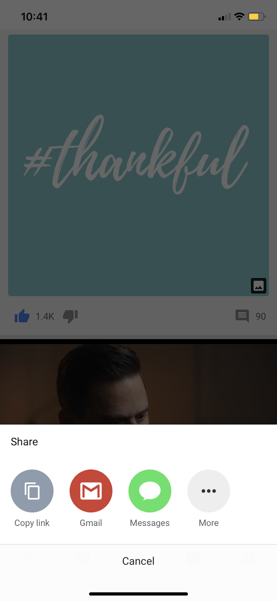
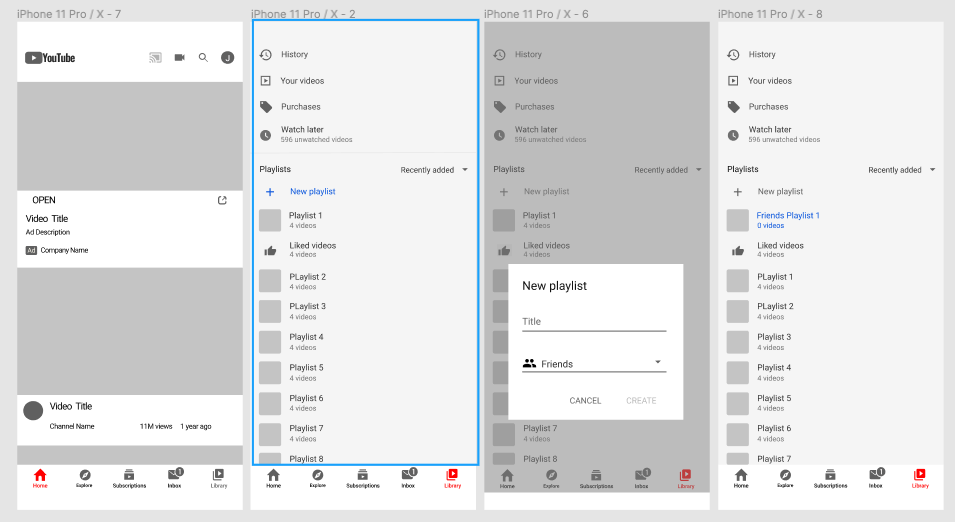
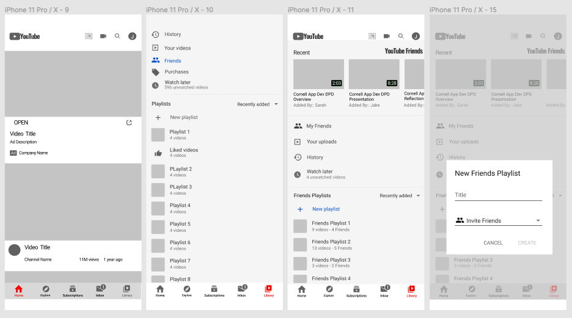
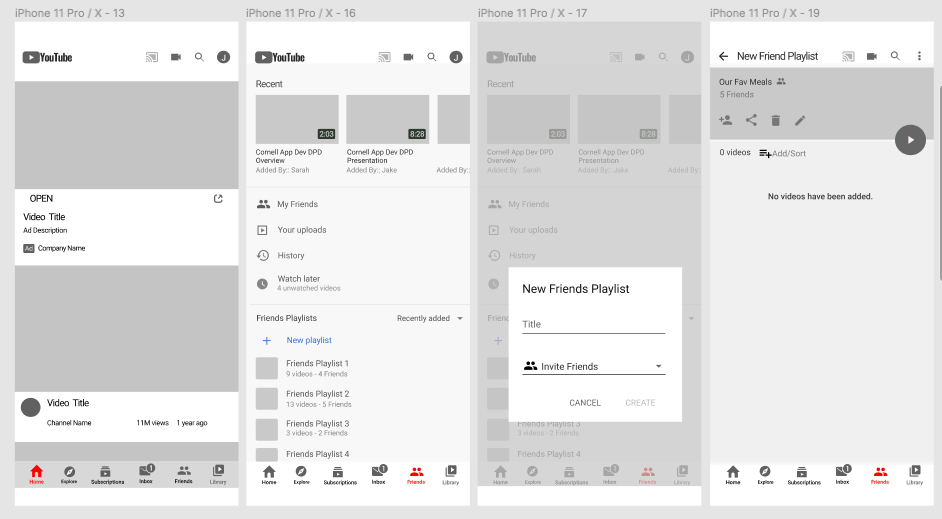

YouTube
Can users do more with playlists?
Overview
A feature that allows users create, edit, and share collaborative playlists
Roles
UI Designer
UX Designer
UX Researcher
Time Frame
January 2020 -
May 2020
Introduction
Milllions of people use YouTube daily to discover and stream numerous videos, including tutorials, vlogs, compilations, music videos, and etc. The possibilities are endless. However, when a user finds a couple of videos that deserve more views, he or she steps into a restricting bubble that many other users also have found themselves stuck in.
YouTube does not allow users to directly share videos and playlists with friends.
If a group of people wants to send YouTube videos to one other, each person would have to open the app,
find the option to share the video, copy the link, choose an external app, open the different app,
experience a few seconds of internet lag, paste the link, send the link, return back to YouTube, and repeat
the process for each video.
If a few others would like to view the videos sent by friends or family, they would have to spend 5 minutes searching through their text messages or email inbox to find the video link, launch a new browser, wait 20 seconds for the buffering symbol to disappear, return to their inbox, open the next link in a new tab, repeat the process for all videos, and then finally begin watching the YouTube videos.
The image on the right of this section shows YouTube's current option for users to share content.
User Research
To better understand the range and level of difficulty with sharing YouTube videos through the app, I interviewed a variety of users, allowing them to voice their experiences.
Trends found through the interviews include:
- People have a hard time following all the steps to share a video.
- People are reluctant to share a video because they are unsure of their friends' interests.
- People have a difficult time finding new content to share with friends because the YouTube algorithm chooses suggested content based on history.
Insights found through the interviews include:
- Users want to interact with their friends.
- Users prefer to not need to leave the YouTube app in order to share one or multiple videos.
- Users fear possible invasion of privacy while sharing videos.
- Users want control over what the desire to see and who can see what they share.
- User favor the ability to keep track of the friends so share particular videos.
People Problem:
YouTube allows users to find and share content that friends might also be interested in. However, the process is challenging because:
- People have a hard time following all the steps to share a video with friends.
- Users are unsure of their friends’ tastes.
- People have a difficult time finding new content.
Market Research
Other platforms are solving the problem of sharing content by:
- Twitter: “Retweet” feature; displaying content that “followed” users have liked in the home feed
- Instagram: “Tagging” feature; showing content that “followed” users have retweeted or liked
Brainstorming Session
Figuring Out Which Feature To Implement
I recruited two friends, Tiffany and Oluwatise, as my brainstorming buddies.
After brainstorming, we found two opportunity areas:
- Share: How might we allow friends to share a collection of videos with each other within the app?
- Organization: How might we sort videos shared by friends?
Enabling Users To More Efficiently Share Videos
The chosen focus area is "Sharing-Playlist."
Initial Approaches

Testing the Different Tactics
After weighing the pros, cons, and requirements of each of the three initial approaches, the chosen tactic is: “Must Watch.”
The goal of the feature is to allow users within the app to share videos that their friends “must watch.”
How It Solves The People Problem:
- Share videos without additional steps beyond features that already exist within the app.
- Users can look over previous suggestions by their friends to identify patterns and similar interests.
- Allows users to share, watch, and store new content suggested by other friends in one place.
Determining the Entry Point
How might we use visual elements to allow users to share and consolidate content that they wish to share with others? What navigation flow should the user follow to do so?
Four Entry Point flows explorations are as follows:
Entry Point One
Entry Point Two

Entry Point Three
Entry Point Four
Final Revision
After analyzing results from user testing, the final feature was determined. The interaction includes two entry points: in the library icon (located in the footer) and in ellipses icon underneath a video, allowing for users to follow the current process for creating a playlist.
The interaction includes a “collaborative” feature, allowing users to invite friends, relatives, and co-workers to view, edit, and interact with playlists as if they were editing and interacting with a Google Docs page. In addition to the private, unlisted, and public view options on current YouTube playlists, users have also control over who can edit and see their shared playlists.
The collaborators tab stores a list of previous invitees as the user has created a playlist with, allowing the user to manage his/her collaborators.

Conclusion
YouTube is a highly successful, well-known and useful app present in the lives of many. However, it lacks the ability to build smaller communities, especially in the area of video sharing. A Collaborative Playlist feature will better enable users to share and manage videos with friends while not needing to leave the YouTube app. This feature will help users build stronger connections with one another, also bringing in new users who favor the smaller communities on YouTube.